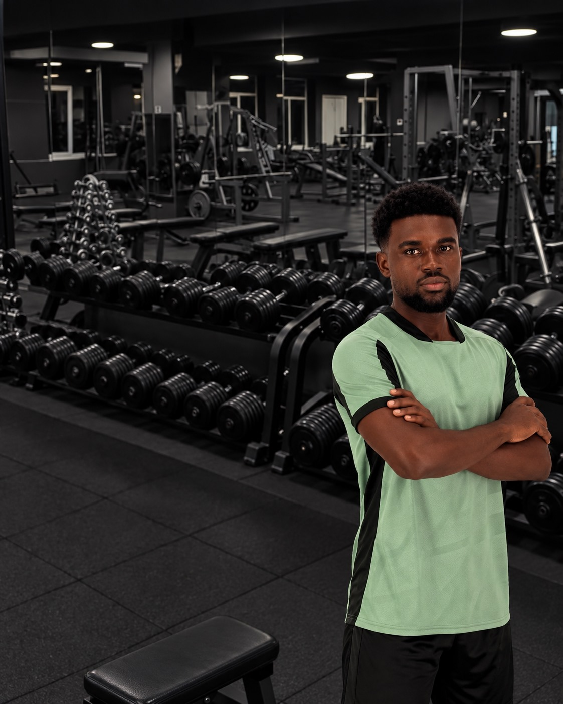
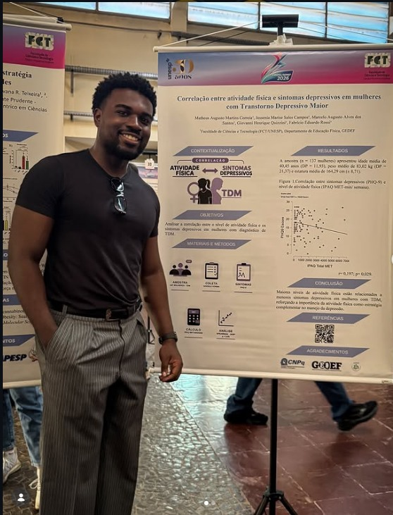

PLANEJAR
COM CLAREZA.
Estratégia construída a partir do seu objetivo, rotina e ponto de partida.
Personal Trainer · CREF 211765-G/SP
Treinamento baseado em evidência para construir performance, força e qualidade de vida.
Começar agora →
TREINAMENTO PERSONALIZADO
Matheus Martins é profissional de Educação Física formado pela UNESP. Seu trabalho une treinamento baseado em evidência, estratégia e acompanhamento para quem quer treinar com propósito.
Performance, hipertrofia e condicionamento não pedem fórmulas prontas: pedem um plano que respeite o seu momento.
Conheça o Matheus ↗
A base do método
Um treino bem orientado não é só o que você faz hoje. É o que permite continuar evoluindo amanhã.
Estratégia construída a partir do seu objetivo, rotina e ponto de partida.
Exercícios, volume e intensidade organizados para tornar cada sessão relevante.
Acompanhamento para transformar resposta ao treino em próximos passos consistentes.
Entendimento do seu objetivo, momento atual e contexto.
Estrutura de treino criada para fazer sentido na sua rotina.
Ajustes contínuos para manter o treino claro e progressivo.
Consistência com direção para seguir avançando.
Conteúdo para ajudar você a tomar decisões mais conscientes sobre treino, saúde e performance.
TREINAMENTO · 6 MIN
Treinar com estratégia é criar um processo que respeita técnica, progressão, recuperação e contexto.
Ver o blog →Presencial e on-line